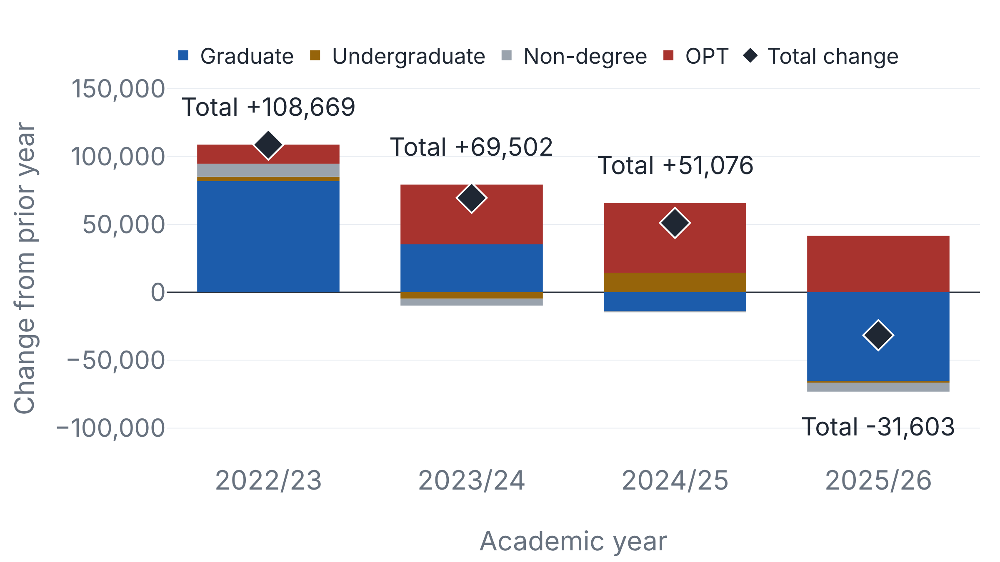
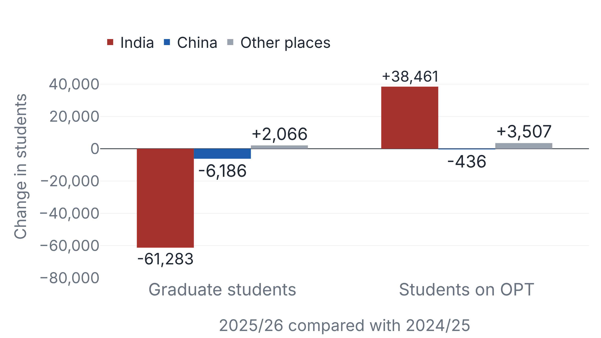

Enrolled international students in the US fall 8.3%, led by Indian graduate students
A 14.1% rise in graduates on Optional Practical Training, nearly all of it from India, kept the fall in IIE's Open Doors 2026 total to 2.7%.
A total that includes people who have graduated
Open Doors, the yearly census of international students in the United States by the Institute of International Education (IIE), adds two different groups into one total: students enrolled in classes, and graduates working under Optional Practical Training (OPT). In 2025/26 the two groups moved in opposite directions, and the total shows only the net.1
The total fell 2.7%, to 1,146,163. Enrolled students, meaning the undergraduate, graduate and non-degree levels, fell 8.3%, from 883,513 to 810,378. OPT, which lasts up to 12 months after a degree or up to 36 months in some fields, rose 14.1% to 335,785.23 India accounts for 94% of the world's fall in graduate students and 93% of its rise in OPT students.4
The enrolled count fell because graduate students did

Graduate students produced most of the growth in 2022/23, 81,930 of 108,669. In 2023/24 OPT's gain of 43,989 passed their 35,264. In 2024/25 the graduate count fell by 13,810 and OPT's gain of 51,471 carried the total up. In 2025/26 the graduate count fell by 65,403, undergraduate and non-degree students by another 7,732 together, and OPT added 41,532. The result is the total's fall of 31,603. Master's students fell 22.4%, from 306,123 to 237,655, while doctoral students rose 3.1%.5
OPT holds people who started their degrees years earlier, so a drop in new students reaches that part of the total late. It reached the enrolled part at once. New graduate enrollment fell 14.5% in 2024/25 and another 25.6% in 2025/26, from 176,084 in 2023/24 to 112,004, and the enrolled graduate count fell in both years.6 OPT had not yet turned. IIE says it "grew by 14% to reach 335,785 students, due to strong international graduate student growth in recent years."7
India holds both movements

India's graduate count fell 34.4%, by 61,283, and its OPT count rose 26.8%, by 38,461. The OPT gain alone equals 52.6% of the 73,135 students the enrolled count lost worldwide.4 China's graduate count fell by 6,186 and its OPT count by 436. By subtraction, every other place of origin together gained 2,066 graduate students and 3,507 on OPT.
Open Doors counts people in each category and does not follow them between categories, so this compares two counts that share a country. It does not show the same people moving. IIE publishes no table of new enrollment by place of origin, so the split cannot be carried back to students as they arrive.
OPT is the part IIE expects to fall next
In the report on its fall 2026 survey, IIE writes that "as large cohorts of international students from the past continue to cycle through the system, the number of OPT students will likely continue to decrease in the coming years."9 In 2025/26 the part of OPT on STEM extensions grew 31.1%, to 139,626, against 4.5% for post-completion OPT.5 How fast OPT shrinks cannot be computed from IIE's tables, which never link OPT students to the year they entered. A fixed ratio does not hold either. OPT divided by new graduate enrollment two years earlier was 1.61 in 2017/18 and 1.91 in 2025/26, by division of IIE's counts.
A survey of 809 institutions reports further falls
| Level | Fall 2026 Snapshot | Fall 2025 Snapshot | Census 2025/26 |
|---|---|---|---|
| Total | -9% | -1% | -2.7% |
| Undergraduate | -3% | +2% | -0.3% |
| Graduate | -15% | -12% | -13.4% |
| OPT | -6% | +14% | +14.1% |
| New enrollment | -15% | -17% | -17.7% |
The Snapshot was fielded from 1 to 20 October 2026. Its 809 institutions hold about 60% of the students in Open Doors, and it reports rounded percentages, not counts.9 IIE gives no rule for comparing its percentages with the census. Last year's Snapshot is a test: it came within 2.3 points of the census on every line, and on each level that fell in the census it showed a smaller fall or a rise. That is one year of one survey.
Among institutions reporting declines in new enrollment, 88% cite the visa application process, 70% travel restrictions, 70% students feeling unwelcome in the United States and 69% the duration of status rule.9 These are institutions' reasons. IIE adds that students from countries under the presidential proclamations are 2% of all international students, and that 22% of institutions said students felt unwelcome on US campuses.9 IIE does not say how much of the fall each reason explains.
OPT rose in the census every year from 2022/23 to 2025/26. In the Fall 2026 Snapshot it falls 6%, and with every level now falling, no part of the total is left to offset the others.
Sources
- IIE · Open Doors 2026 Fast Facts
- IIE · Open Doors 2026, International Students Overall Enrollment Trends, 1949/50 to 2025/26
- IIE · Open Doors FAQ
- IIE · Open Doors 2026 International Student Census Tables
- IIE · Open Doors 2026, International Students by Academic Level
- IIE · Open Doors 2026, New International Student Enrollment
- IIE · Open Doors 2026 International Students, Key Findings
- US Code of Federal Regulations · 8 CFR 214.2(f)(10), practical training
- IIE · Fall 2026 Snapshot on International Student Enrollment
- IIE · Fall 2025 Snapshot, Key Findings